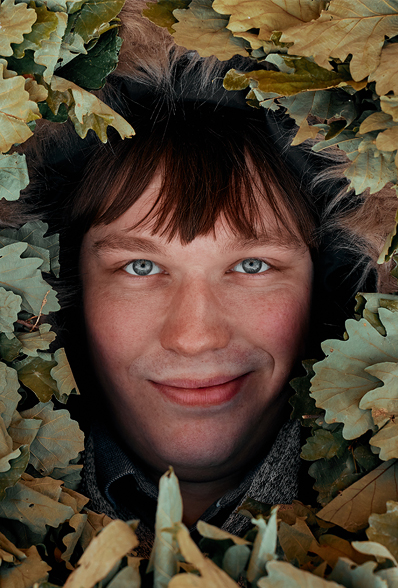

Специалисты
- КонстантинМастер пара
Константин – единственный из нашей команды, кто назвал баню не только работой, но и хобби, выросшем из детства.
Константин знает про баню всё, и слушать его очень интересно.
"Отец первый раз привёл меня в баню, когда мне было 5 лет и она полностью подходила под описание детской страшилки. Только потом я узнал, что это баня по-чёрному. Побывав почти во всех банях мира, я отдаю предпочтение именно этой классической бане. Знаете почему?
Чёрная топка покрыта дёгтем. Он витает в воздухе и оседает на стенах бани вместе с сажей. По составу дёготь – набор углеводородов. Они обеззараживают. Поэтому дегтярное мыло такое полезное."
"Отец первый раз привёл меня в баню, когда мне было 5 лет и она полностью подходила под описание детской страшилки. Только потом я узнал, что это баня по-чёрному. Побывав почти во всех банях мира, я отдаю предпочтение именно этой классической бане. Знаете почему?
Чёрная топка покрыта дёгтем. Он витает в воздухе и оседает на стенах бани вместе с сажей. По составу дёготь – набор углеводородов. Они обеззараживают. Поэтому дегтярное мыло такое полезное."
"Отец первый раз привёл меня в баню, когда мне было 5 лет и она полностью подходила под описание детской страшилки. Только потом я узнал, что это баня по-чёрному. Побывав почти во всех банях мира, я отдаю предпочтение именно этой классической бане. Знаете почему?
Чёрная топка покрыта дёгтем. Он витает в воздухе и оседает на стенах бани вместе с сажей. По составу дёготь – набор углеводородов. Они обеззараживают. Поэтому дегтярное мыло такое полезное."